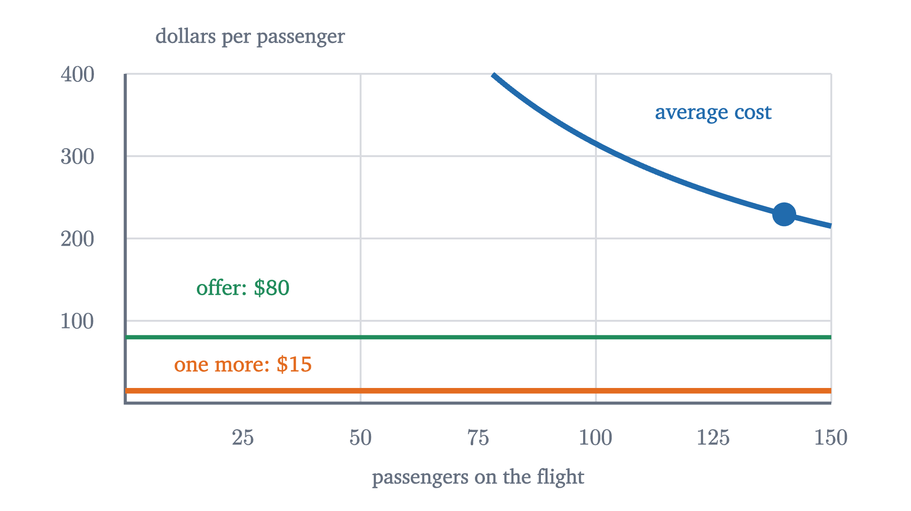
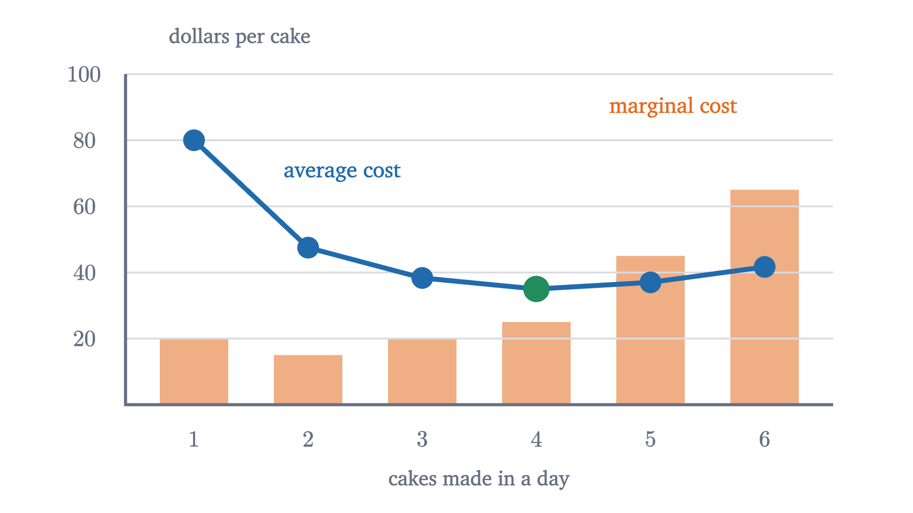
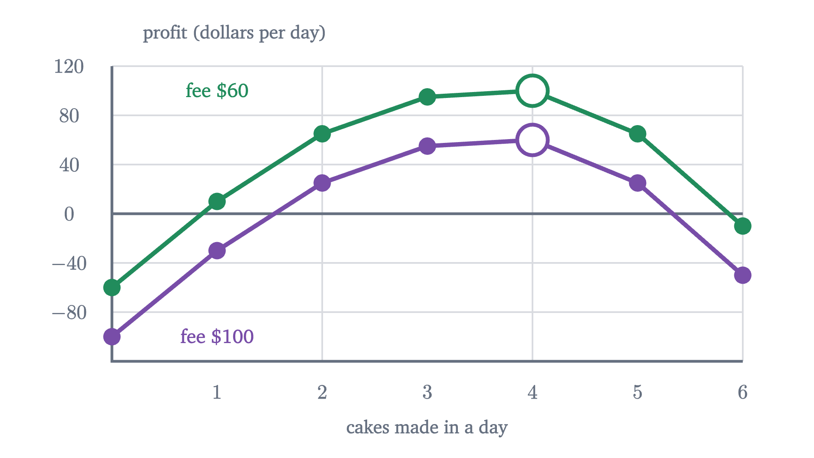
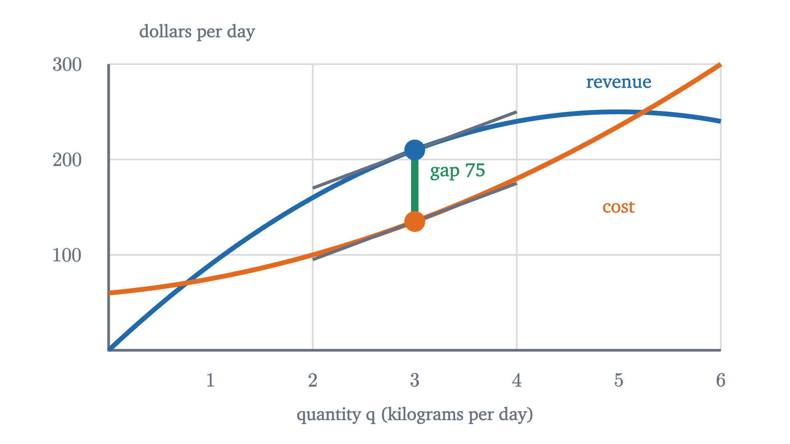

Thinking at the margin: marginal cost and revenue
The right question is what one more unit adds to revenue and to cost. Why averages mislead, why sunk costs drop out, and why profit peaks where MR meets MC.
AssumesSupply and demand: where a price comes fromElasticity: when raising the price lowers revenue
A flight with 150 seats costs an airline $30,000 to operate, which is $200 a seat. Ten minutes before the door closes there are ten empty seats, and a standby passenger offers $80 for one of them. Selling a $200 seat for $80 looks like a way to lose $120. The airline sells it, and the airline is right.
The $200 figure answers the question “what did a seat cost on average?” The decision at the gate needs the answer to a different question: what changes if this one passenger boards? The crew, the fuel for the aircraft’s own weight and the landing fee are paid whether or not seat 23C is occupied. Suppose one more passenger adds $15 of fuel, catering and card fees. Then boarding the passenger adds $80 of revenue and $15 of cost, and the airline ends the day $65 richer than if the seat had flown empty.
Average cost and marginal cost answer different questions
Write $C(q)$ for the total cost of serving $q$ units, here passengers. For the flight, $C(q) = 30000 + 15q$ dollars.
With 140 seats sold, the average cost is $AC(140) = 30000/140 + 15 \approx 229$ dollars. The marginal cost of the 141st passenger is $C(141) - C(140) = 15$ dollars. Both are honest numbers. Only the second describes what the decision at the gate changes.

The two numbers are linked, and the link explains the graph. If the next unit costs less than the average so far, it pulls the average down, the way a low test score pulls down a grade average.
On the flight the marginal cost of $15 is always below the average, so every extra passenger lowers the average and none of them ever brings it down to $15.
Sunk costs
The $30,000 dropped out of the gate decision for a specific reason: by then it could not be changed.
A sunk cost appears in the result of every available option. When two options are compared by subtracting one result from the other, it cancels. With the standby passenger the day’s result is $R + 80 - 30000 - 15 \times 141$, without her it is $R - 30000 - 15 \times 140$, and the difference is $80 - 15 = 65$ whatever the $30,000 was.
“Fixed” and “sunk” are different properties. A fixed cost does not vary with quantity; a sunk cost can no longer be avoided at all. A week before departure the $30,000 is fixed but not yet sunk, because the flight could still be canceled.
Pause and try
(a) At the gate, a tour group offers $50 a seat for all ten empty seats. Accept? (b) A week earlier, only 60 seats are booked, at an average fare of $250, no more bookings are expected, and canceling would avoid the entire $30,000. Ignoring the cost of rebooking passengers, should the flight operate?
Show answerHide answer
(a) Each seat adds $50 of revenue and $15 of cost, so accepting adds $10 \times 35 = 350$ dollars. Accept, although $50 is a quarter of the average cost. (b) Now the $30,000 is avoidable, so it counts. Operating brings in $60 \times 250 = 15000$ dollars and costs $30000 + 15 \times 60 = 30900$. Canceling is better by $15,900. The same $30,000 is ignored in (a) and decisive in (b), because only in (b) does the choice affect it.
How many to make
The airline’s question was about one unit. Most decisions are about how many. Mara sells large decorated cakes from a market stall. The stall fee is $60 a day, paid in advance. Through experience she knows her demand: to sell $Q$ cakes in a day she can charge at most $P = 100 - 10Q$ dollars each. She charges every customer the same price, and she bakes to order, so nothing is wasted. She also knows her costs. She wants the largest profit.
| Cakes $q$ | Price | Revenue $R(q)$ | Cost $C(q)$ | Profit |
|---|---|---|---|---|
| 0 | 0 | 60 | $-60$ | |
| 1 | 90 | 90 | 80 | 10 |
| 2 | 80 | 160 | 95 | 65 |
| 3 | 70 | 210 | 115 | 95 |
| 4 | 60 | 240 | 140 | 100 |
| 5 | 50 | 250 | 185 | 65 |
| 6 | 40 | 240 | 250 | $-10$ |
Reading down the last column, the best plan is four cakes at $60 each, for a profit of $100. That settles this case. But the table hides why four is the answer, and it has to be rebuilt whenever anything changes. So ask the airline’s question once per cake.
Pause and try
Compute $MR(q)$ and $MC(q)$ for cakes 1 through 6 from the table. The fourth cake sells for $60. Why is its marginal revenue not $60?
Show answerHide answer
$MR$: 90, 70, 50, 30, 10, $-10$. $MC$: 20, 15, 20, 25, 45, 65. To sell a fourth cake Mara must lower the price from $70 to $60 for every customer. She gains $60 from the fourth cake and gives up $10 on each of the three she would have sold anyway: $60 - 30 = 30$. These are the two strips from the lesson on elasticity.
Each cake changes profit by its marginal revenue minus its marginal cost: $+70$, $+55$, $+30$, $+5$, then $-35$ and $-75$. Starting from $-60$ and adding these up reproduces the profit column. The best quantity is where the additions stop being positive.
The hypothesis in part 2, one switch from “revenue bar taller” to “cost bar taller”, holds whenever $MR(k) - MC(k)$ decreases as $k$ grows. That is the usual case: selling more requires a lower price, and producing more eventually strains capacity. When it fails, part 1 still holds, and we will meet such a case below. If some unit has $MR(k) = MC(k)$ exactly, it leaves profit unchanged and both $k - 1$ and $k$ are best. When quantity varies continuously the switch always passes through such a point of equality, which is why the rule is quoted as “$MR = MC$”.
Two rules of thumb that use averages fail on Mara’s table. “Bake while the price exceeds average cost” keeps going to five cakes, where the price of $50 is above $AC(5) = 37$; five cakes do make a profit, but $35 less than four. “Make the quantity with the lowest average cost” picks four here, but only by coincidence: it ignores demand entirely.

The picture is the average-marginal theorem at work: $MC(4) = 25 < AC(3) \approx 38.3$, so the average falls to 35, and $MC(5) = 45 > AC(4) = 35$, so it rises to 37.
The stall fee plays no part in the quantity decision. It sits in $\pi(0) = -60$, the starting point of the sum in part 1, and in none of the terms.

The same rule with calculus (optional)
If quantity can vary continuously, say cake sold by the kilogram, the differences become derivatives. Take $R(q) = 100q - 10q^2$ and $C(q) = 60 + 10q + 5q^2$. Marginal revenue is $R'(q) = 100 - 20q$ and marginal cost is $C'(q) = 10 + 10q$. Profit $\pi = R - C$ has $\pi'(q) = R'(q) - C'(q) = 90 - 30q$, which is zero at $q = 3$, and since $\pi''(q) = -30 < 0$ this is a maximum, by the reasoning in the lesson on optimization. There $R'(3) = C'(3) = 40$ and $\pi(3) = 210 - 135 = 75$.

The condition $R'(q) = C'(q)$ alone is not enough, for the same reason as in the discrete theorem: it also holds where profit is smallest, if marginal cost crosses marginal revenue from above.
A seller who cannot choose the price
Mara had a demand curve of her own. Many sellers do not. A farmer selling wheat, or one of the students selling a used textbook in the lesson on supply and demand, faces a going price that her own quantity is too small to move.
For a price-taker the marginal rule reads: produce every unit whose marginal cost is at most the price. When marginal cost is rising, production stops where $MC$ reaches $p$, which is the textbook condition $P = MC$. This is also where a supply curve comes from. In the supply-and-demand lesson each seller had a “cost”, the lowest price she would accept, and the supply curve was those costs in increasing order. That cost is a marginal cost.
Suppose Mara switches to plain cakes that a supermarket buys at a fixed price, in any number, and her costs are the same as before.
At $40 the rule gives four cakes and a profit of $160 - 140 = 20$ dollars. At $30 it still gives four, since $MC(4) = 25 \le 30 < MC(5) = 45$, but now revenue is 120 against a cost of 140. She loses $20. Should she stay home?
Pause and try
The $60 stall fee is paid in advance and is not refundable. At a price of $30, compare Mara’s result from baking four cakes with her result from baking none. What must revenue cover for baking to be worthwhile?
Show answerHide answer
Baking four: $120 - 140 = -20$. Baking none: $0 - 60 = -60$. Baking is better by $40, which is revenue of 120 minus the variable cost of 80. The fee is sunk, so it appears in both results and cancels. Baking is worthwhile exactly when revenue covers the variable cost.
In symbols, with a sunk fixed cost $F$ and variable cost $V(q)$: producing $q \ge 1$ units beats producing none exactly when $pq - V(q) - F \ge -F$, that is, when $p \ge V(q)/q$. The right side is the average variable cost, $AVC(q)$. So a price-taker should shut down when the price is below the smallest value of $AVC$, and otherwise produce where the marginal rule says.
If the fee is not sunk, as when Mara is deciding whether to rent the stall next season, it counts, and the test becomes whether revenue covers all costs: $p \ge AC(q)$. Her lowest average cost is $35. So at prices between $17.50 and $35 she operates today at a loss and does not renew.
What the model assumes
The rule is a theorem about a seller who knows her revenue and cost schedules and wants maximum profit. Whether real firms behave this way is an empirical matter. Surveys since the 1930s have found many managers describing their pricing as a markup on average cost, while airline pricing systems are built on marginal reasoning of the kind in the opening. The airline example also leaned on an assumption: that the $80 fare did not lower anyone else’s fare. If regular customers learn to wait for last-minute bargains, the marginal revenue of the cheap seat is less than $80, and the calculation has to include that.
Check yourself
A factory’s lease costs $10,000 a month and is paid for the year. This month it can make 500 chairs at a variable cost of $30 each and sell them for $40 each. What should it do?
All of this came from one habit: compare the options that are open, and count only what differs between them. The average cost of a seat, the fee already paid and the money already spent on a ticket are the same on every branch, so they cancel. The next lesson uses marginal cost as the supply curve to ask how much buyers and sellers gain from a market, and what a tax does to that gain.
Problems
The first three repeat the lesson’s calculations, the next three ask you to apply the ideas, and the last two extend them.
Problem 1
A lemonade stand’s revenue for $q = 0, \dots, 5$ jugs is 0, 50, 90, 120, 140, 150 dollars and its cost is 30, 50, 65, 85, 115, 155 dollars. Compute $MR$ and $MC$ for each jug, find the best quantity with the marginal rule, and confirm it with the profits.
Show solutionHide solution
$MR$: 50, 40, 30, 20, 10. $MC$: 20, 15, 20, 30, 40. $MR - MC$: $30, 25, 10, -10, -30$. The sign switches once, after the third jug, so $q^* = 3$. Profits: $-30, 0, 25, 35, 25, -5$. The largest is 35, at three jugs, and each profit is the previous one plus $MR - MC$.
Problem 2
A train run costs $12,000 plus $5 per passenger. With 160 tickets sold, find the average cost per passenger and the marginal cost of one more. A last-minute traveler offers $40. Should the operator accept, and what happens to the average cost?
Show solutionHide solution
$AC(160) = 12000/160 + 5 = 80$ dollars, and $MC(161) = 5$ dollars. Accepting adds $40 of revenue and $5 of cost, a gain of $35, so accept. Since $MC(161) = 5 < AC(160) = 80$, the average falls: by the theorem, by $(80 - 5)/161 \approx 0.47$ dollars, to about $79.53.
Problem 3
The lemonade stand of the first problem becomes a price-taker at $25 a jug, with the same costs. The $30 fixed cost is sunk. How many jugs should it make, and what is its profit? Should it shut down?
Show solutionHide solution
Marginal costs are 20, 15, 20, 30, 40. The jugs with $MC \le 25$ are the first three, and the difference $25 - MC$ switches sign once, so make three. Revenue is 75 and cost is 85, a loss of $10. Variable cost is $85 - 30 = 55$, which revenue covers, so operating (losing 10) beats shutting down (losing 30). In terms of averages: $AVC(3) = 55/3 \approx 18.3 < 25$.
Problem 4
You paid $60 for a concert ticket that cannot be refunded. On the night you are tired: you would now value attending at $30, and a friend offers a dinner you value at $45. (a) What should you do? (b) What if you learn that you can resell the ticket for $50?
Show solutionHide solution
(a) The $60 is sunk and appears in both options. Attending is worth 30 and the dinner is worth 45, so go to dinner. Counting the $60 as a reason to attend is the sunk cost fallacy. (b) Now $50 of the ticket’s cost is recoverable, so it is no longer sunk. The options are: attend, worth 30; or sell and dine, worth $50 + 45 = 95$. Sell. Attending now has an opportunity cost of $50 that it did not have in (a).
Problem 5
Mara’s landlord replaces the $60 daily fee with a charge of $20 per cake sold. Use the original table, where she sets her own price. How many cakes does she now make, and does she prefer the old arrangement?
Show solutionHide solution
The fixed cost is now 0 and every marginal cost rises by 20, to 40, 35, 40, 45, 65, 85. Marginal revenue is 90, 70, 50, 30, 10, $-10$, so $MR - MC$ is $50, 35, 10, -15, \dots$ and the best quantity is three. Variable costs before the charge are 20, 35, 55 for one to three cakes, so profit at three is $210 - 55 - 60 = 95$. Under the old fee she made four cakes and $100. She slightly prefers the old arrangement, and the landlord collects $60 either way. A per-unit charge changes the quantity; a fixed fee does not.
Problem 6
A student has an average of 80 on four tests and scores 70 on the fifth. Find the new average using the average-marginal formula. Then prove: if $AC(q) \le AC(q-1)$ and $AC(q) \le AC(q+1)$, so that average cost is lowest at $q$, then $MC(q) \le AC(q) \le MC(q+1)$.
Show solutionHide solution
The fifth score plays the role of the marginal value: the new average is $80 + (70 - 80)/5 = 78$. For the proof, apply the theorem twice. From $AC(q) - AC(q-1) = \frac{MC(q) - AC(q-1)}{q} \le 0$ we get $MC(q) \le AC(q-1)$. Rewrite the same identity as $q\,AC(q) = (q-1)\,AC(q-1) + MC(q)$; since $AC(q-1) \ge AC(q)$, this gives $q\,AC(q) \ge (q-1)\,AC(q) + MC(q)$, so $MC(q) \le AC(q)$. From $AC(q+1) - AC(q) = \frac{MC(q+1) - AC(q)}{q+1} \ge 0$ we get $MC(q+1) \ge AC(q)$. So marginal cost passes from below average cost to above it at the quantity where average cost is lowest, as in the figure, where $25 \le 35 \le 45$.
Problem 7
(Uses calculus.) A firm has revenue $R(q) = 60q - 2q^2$ and cost $C(q) = 100 + 12q + q^2$ for $q \ge 0$. Find the profit-maximizing quantity, the price, and the profit, and verify that it is a maximum.
Show solutionHide solution
$R'(q) = 60 - 4q$ and $C'(q) = 12 + 2q$. Setting them equal, $48 = 6q$, so $q = 8$. Profit is $\pi(q) = 48q - 3q^2 - 100$, with $\pi''(q) = -6 < 0$, so $q = 8$ is the maximum of this downward parabola. Revenue is $R = Pq$, so the price is $P = 60 - 2q = 44$. Profit is $\pi(8) = 384 - 192 - 100 = 92$. Check: $R(8) = 480 - 128 = 352$ and $C(8) = 100 + 96 + 64 = 260$, difference 92.
Problem 8
For some product, $MR(k) - MC(k)$ for units 1 to 5 is $-20, -5, +10, +20, -10$. A student says: “Marginal revenue is below marginal cost on the very first unit, so the firm should make nothing.” Find the best quantity and explain which hypothesis the student overlooked.
Show solutionHide solution
By part 1 of the marginal rule, profit relative to making nothing is the running total: $-20, -25, -15, +5, -5$. The largest value is $+5$, at four units, which beats the 0 from making nothing. The student applied part 2, which requires the differences to be positive up to $q^*$ and negative after it. Here the sign goes negative, positive, negative, so part 2 does not apply, and “stop at the first unit that does not pay” is not valid. The early units lose money that the later ones more than recover, as happens when a product has high start-up costs per batch. When the sign pattern is irregular, compare totals.